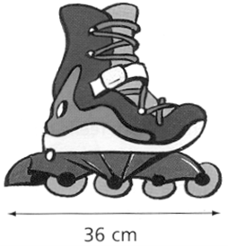

Chapitre 7 : Proportionnalité
I. Situation de proportionnalité
1) Reconnaitre une situation de proportionnalité
Définition : Deux grandeurs sont proportionnelles lorsque l'une s'obtient en multipliant (ou en divisant) l'autre par un même nombre non nul.
Exemple 1 :
| Nombre de croissants | 2 | 5 | 8 |
|---|---|---|---|
| Prix (en €) | 3 | 7,5 | 12 |
On a :
32 = 1,5
7,55 = 1,5
128 = 1,5
Les quotients sont égaux.
Pour passer de la première ligne à la deuxième ligne, on multiplie toujours par le même nombre : 1,5.
| Nombre de croissants | 2 | 5 | 8 |
|---|---|---|---|
| Prix (en €) | 3 | 7,5 | 12 |
× 1,5
Dans ce cas les deux grandeurs sont proportionnelles.
Exemple 2 (contre-exemple) :
| Âge de Léo (en années) | 5 | 10 | 15 |
|---|---|---|---|
| Taille de Léo (en cm) | 110 | 140 | 165 |
On a :
1105 = 22
14010 = 14
Les quotients ne sont pas égaux.
Dans ce cas les deux grandeurs ne sont pas proportionnelles.
2) Compléter un tableau de proportionnalité
Exemple : Paul achète 3 kg de pommes pour 6,9 €. Compléter le tableau suivant :
| Quantité de pommes (Kg) | 3 | 4 | 7 | 15 |
|---|---|---|---|---|
| Prix (en €) | 6,9 | ? | ? | ? |
a) En trouvant le nombre pour passer de la première ligne à la deuxième ligne
| Quantité de pommes (Kg) | 3 | 4 |
|---|---|---|
| Prix (en €) | 6,9 | ? |
6,93 = 2,3
Pour passer de la première ligne à la deuxième ligne, on multiplie par 2,3.
| Quantité de pommes (Kg) | 3 | 4 |
|---|---|---|
| Prix (en €) | 6,9 | ? |
× 2,3
Donc : 4 × 2,3 = 9,2
| Quantité de pommes (Kg) | 3 | 4 |
|---|---|---|
| Prix (en €) | 6,9 | 9,2 |
b) En additionnant ou en soustrayant deux colonnes du tableau
Dans un tableau de proportionnalité on peut additionner ou soustraire deux colonnes :
| Quantité de pommes (Kg) | 3 | 4 | 7 |
|---|---|---|---|
| Prix (en €) | 6,9 | 9,2 | ? |
3 kg + 4 kg = 7 kg
et 6,9 € + 9,2 € = 16,1 €
| Quantité de pommes (Kg) | 3 | 4 | 7 |
|---|---|---|---|
| Prix (en €) | 6,9 | 9,2 | 16,1 |
c) En multipliant ou en divisant une colonne par un nombre non nul
| Quantité de pommes (Kg) | 3 | 15 |
|---|---|---|
| Prix (en €) | 6,9 | ? |
153 = 5
Ainsi on passe de la première colonne à la deuxième colonne en multipliant par 5.
Donc : 6,9 × 5 = 34,5
| Quantité de pommes (Kg) | 3 | 15 |
|---|---|---|
| Prix (en €) | 6,9 | 34,5 |
II. Exemples d'utilisations de la proportionnalité
1) Les pourcentages
Propriété : Appliquer x % à un nombre, c'est multiplier ce nombre par x100.
a) Appliquer un pourcentage :
Exemple : Dans un collège de 400 élèves, 15% des élèves jouent au volley. Combien d'élèves jouent au volley ?
400 × 15100 = 400 × 0,15 = 60
Il y a 60 élèves qui jouent au volley dans ce collège.
Ou bien avec un tableau :
| Nombre d'élèves | 100 | 400 |
|---|---|---|
| Nombre d'élèves qui jouent au volley | 15 | ? |
100 × 4 = 400, donc on multiplie la colonne de gauche par 4
15 × 4 = 60
| Nombre d'élèves | 100 | 400 |
|---|---|---|
| Nombre d'élèves qui jouent au volley | 15 | 60 |
b) Calculer un pourcentage :
Exemple : Dans une classe de 30 élèves il y a 9 filles. Quel est le pourcentage de filles dans cette classe ?
Cela revient à déterminer le nombre de filles qu'il y aurait si la classe était composée de 100 élèves.
| Nombre d'élèves | 30 | 100 |
|---|---|---|
| Nombre de filles | 9 | ? |
930 = 0,3
Pour passer de la première ligne à la deuxième ligne, on multiplie par 0,3.
| Nombre d'élèves | 30 | 100 |
|---|---|---|
| Nombre de filles | 9 | ? |
× 0,3
Donc : 100 × 0,3 = 30
| Nombre d'élèves | 30 | 100 |
|---|---|---|
| Nombre de filles | 9 | 30 |
Dans cette classe, il y a 30% de filles.
2) Échelles
Définition : Sur une représentation à l'échelle, les mesures sur la représentation sont proportionnelles aux mesures réelles.
Remarque importante : Les mesures sont exprimées dans la même unité.
a) Utilisation d'une échelle :
Exemple : Sur une carte à l'échelle 150 000, deux villes sont distantes de 12 cm.
Quelle est la distance réelle entre ces deux villes ?
Quelle est la distance réelle entre ces deux villes ?
| Distance sur la carte en cm | 1 | 12 |
|---|---|---|
| Distance réelle en cm | 50 000 | ? |
50 0001 = 50 000
Pour passer de la première ligne à la deuxième ligne, on multiplie par 50 000.
| Distance sur la carte en cm | 1 | 12 |
|---|---|---|
| Distance réelle en cm | 50 000 | ? |
× 50 000
Donc : 12 × 50 000 = 600 000
| Distance sur la carte en cm | 1 | 12 |
|---|---|---|
| Distance réelle en cm | 50 000 | 600 000 |
La distance réelle est de 600 000 cm soit 6 km.
b) Calculer une échelle :
Exemple : Calculer l'échelle de ce dessin :

Sur ce dessin, on mesure la longueur de la flèche, elle mesure 4 cm.
On cherche combien 1 cm sur le dessin va représenter en réalité.
| Distance sur le dessin en cm | 4 | 1 |
|---|---|---|
| Distance réelle en cm | 36 | ? |
364 = 9
Pour passer de la première ligne à la deuxième ligne, on multiplie par 9.
| Distance sur le dessin en cm | 4 | 1 |
|---|---|---|
| Distance réelle en cm | 36 | ? |
× 9
Donc : 1 × 9 = 9
| Distance sur le dessin en cm | 4 | 1 |
|---|---|---|
| Distance réelle en cm | 36 | 9 |
L'échelle est 19.
Remarque : Calculer une échelle revient à calculer le nombre pour passer de la distance sur la carte à la distance réelle : distance réelledistance sur la carte, ces distances étant dans la même unité.
Exercices
Exercice 1 : Un élève achète 5 cahiers pour 8 €. Quel est le prix de 8 cahiers ? de 12 cahiers ?
Exercice 2 : Dans un collège, 60 % des élèves sont demi-pensionnaires. Il y a 450 élèves dans le collège. Combien d'élèves sont demi-pensionnaires ?
Exercice 3 : Sur une carte à l'échelle 125 000, deux villes sont distantes de 8 cm. Quelle est la distance réelle en km ?